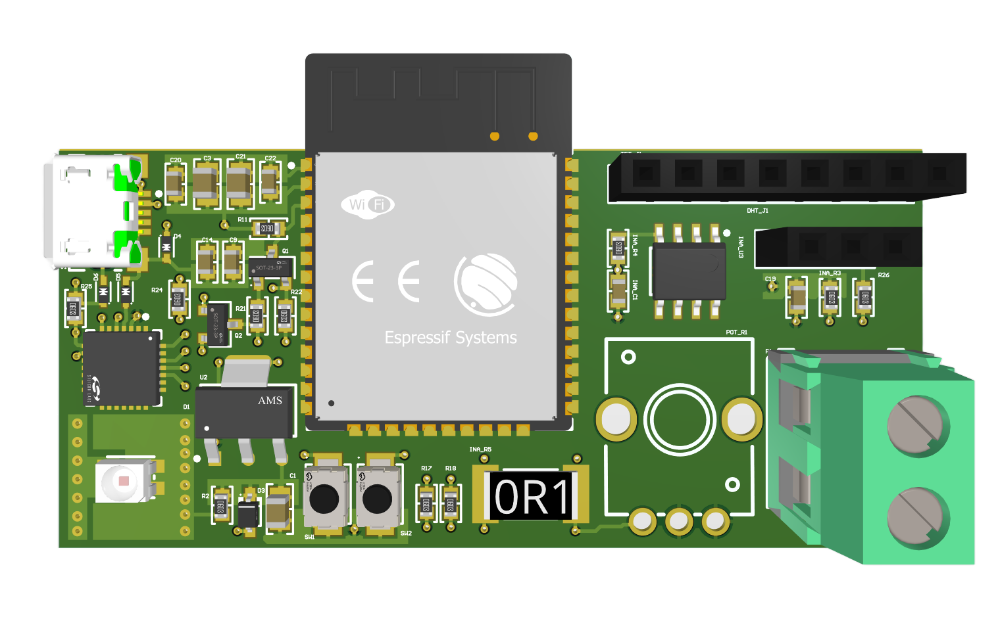
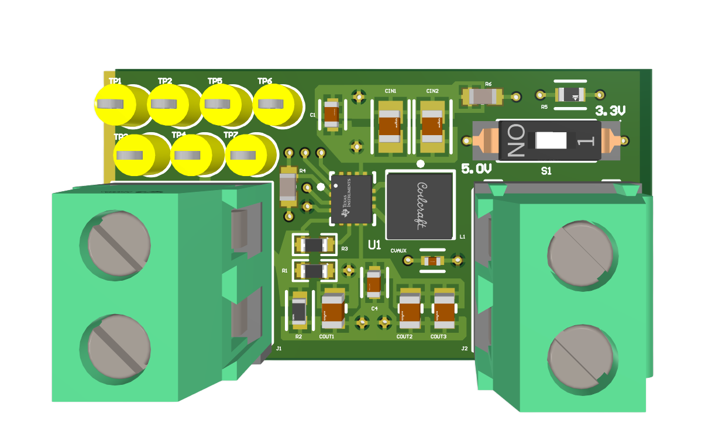
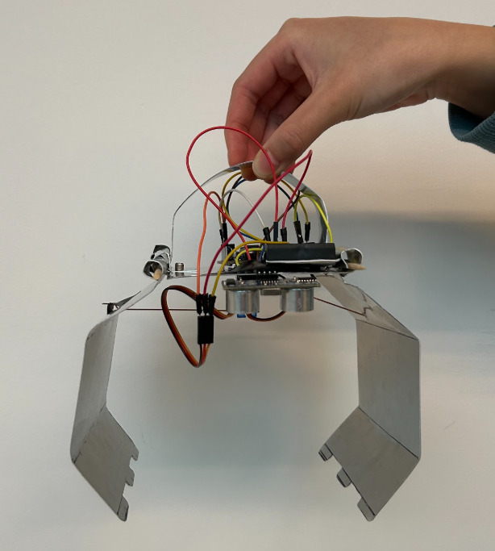
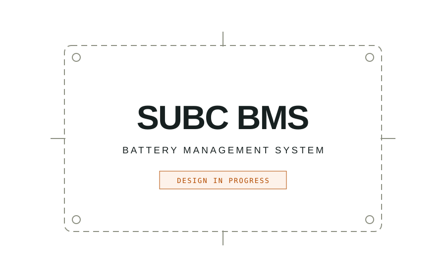

PRJ–001

Embedded systems
Weather Monitor PCB
From a breadboard to a custom PCB. An ESP32 weather monitor that brings temperature, humidity, and solar power data to a screen and the web.
View project →The full collection
Boards, code, models, and the builds that bring them together.

Embedded systems
From a breadboard to a custom PCB. An ESP32 weather monitor that brings temperature, humidity, and solar power data to a screen and the web.
View project →
Power electronics
An adjustable power supply built around the TPS63000. A four-layer PCB taken from schematic and layout through manufacturing and assembly.
View project →
Systems modeling
A rainwater collection and treatment system for a two-person, off-grid household in remote British Columbia. Designed around the whole system.
View project →
Electromechanical design
Motors, sensors, code, and a little mechanical persistence. A team-built Arduino claw designed to handle three rounds of a studio competition.
View project →
Battery management
An in-progress battery management system project for SUBC. Design details and validation results will be added as the work develops.
View project status →